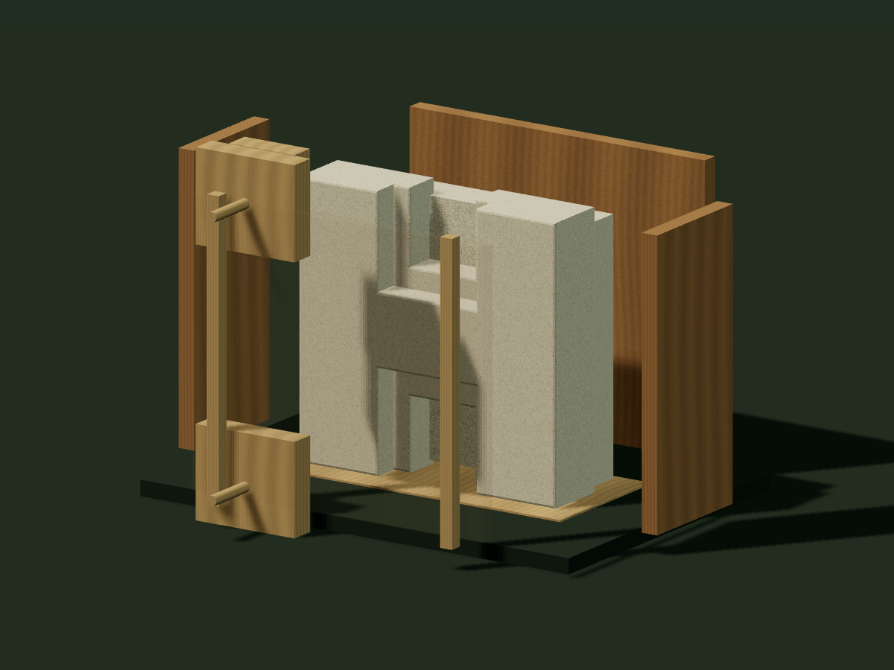
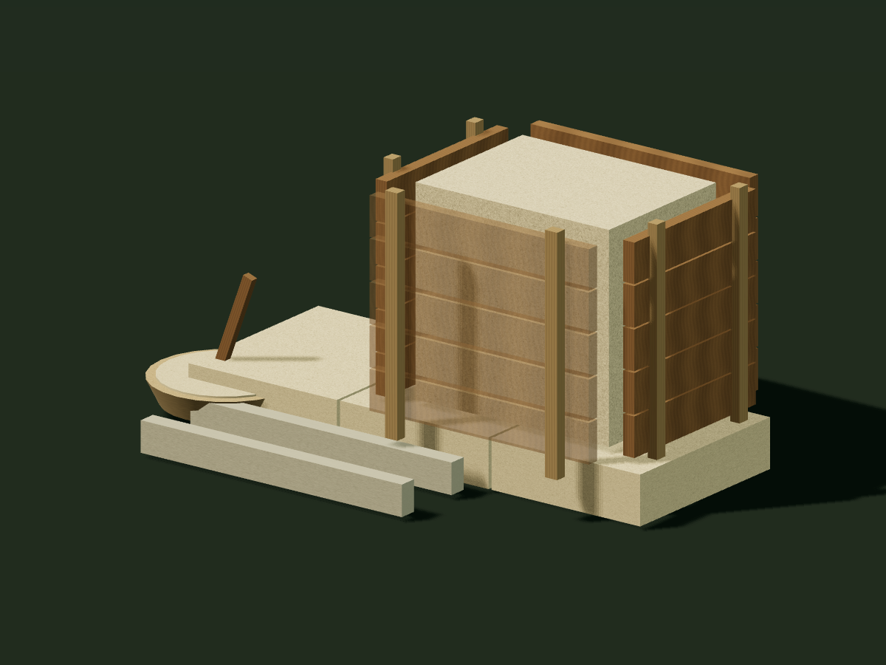
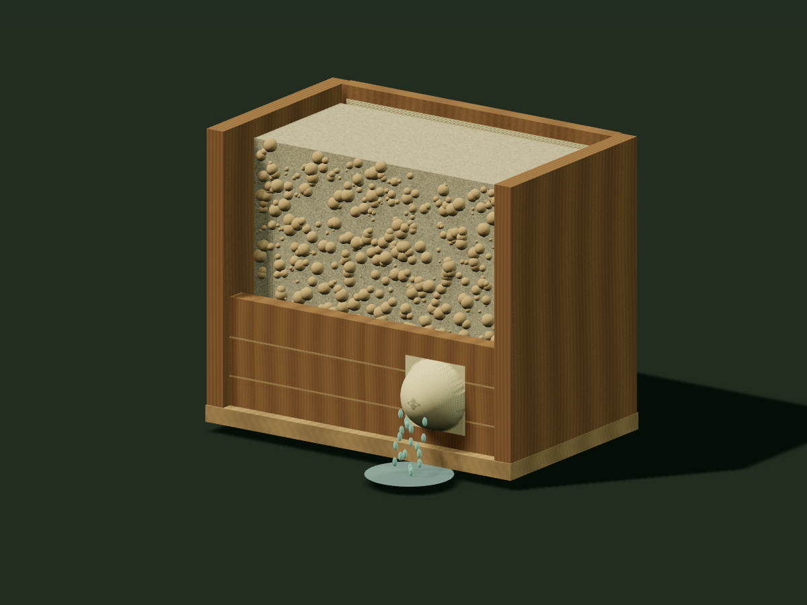
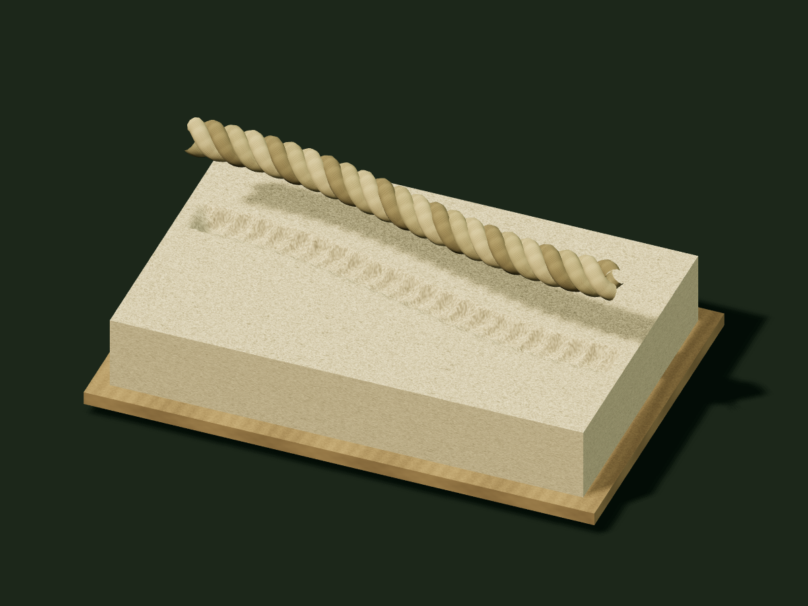
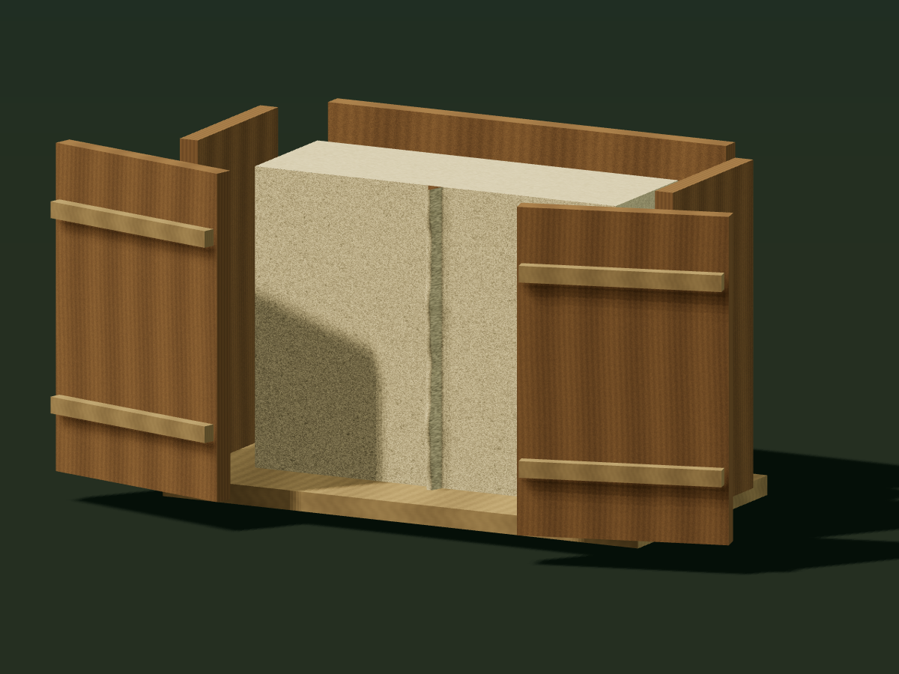
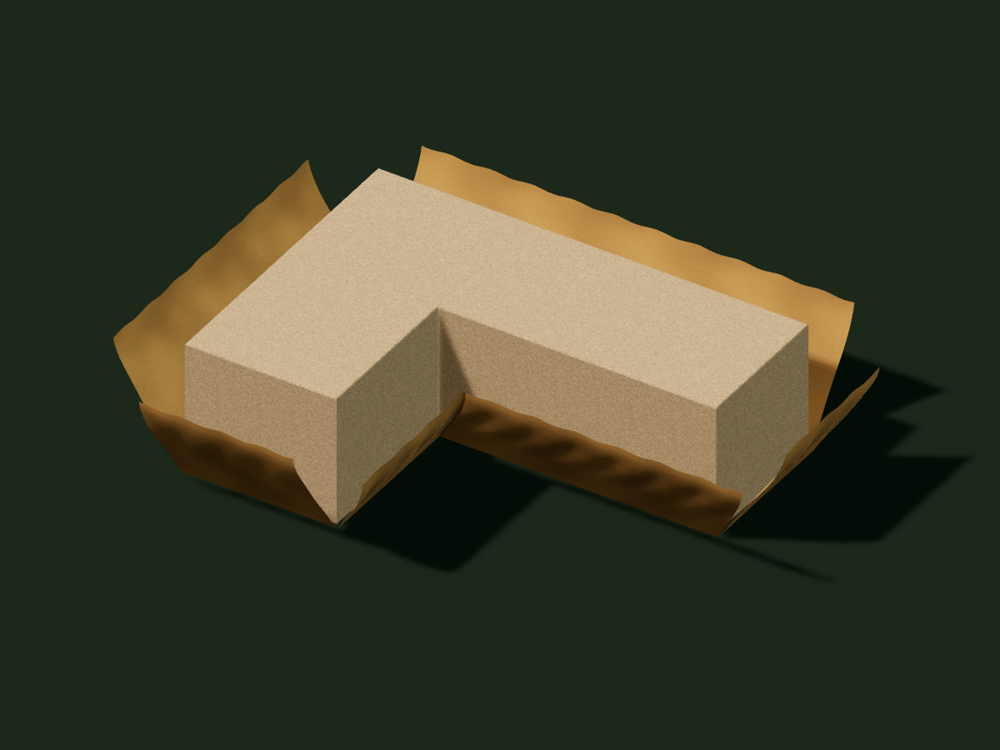

01Explore the process
Pumapunku · Bolivia
The H-block
Watch a multipart mold separate from a stepped H-block. The proposed trick is to make the difficult geometry in the form, while the stone is still workable.
+ ANCIENT STONE / ANOTHER POSSIBILITY
Before the monument, a mixture.
Before the sharp edge, a mold.
Before the mystery, a process.
A visual exploration of the casting hypothesis.
9 ways to imagine stone taking shape.

01 / THE IDEA
Joseph Davidovits proposed a different starting point for some ancient masonry: mineral ingredients made workable, formed, and hardened into stone.
His limestone demonstrations make the idea tangible. Could the same change in sequence help explain a tight joint, a repeated recess, or an enormous block in a confined space? [1]
The studies below bring proposed mechanisms into view. The Egyptian limestone proposal, Andean casting ideas, and Marcell Fóti’s natron hypothesis involve different materials and processes. Each has its own questions to answer.
Read the “Cast, Not Carved” case02 / THE ATLAS
Open a study. Play the process.
Turn it around. Look at what it might leave behind.
Watch a multipart mold separate from a stepped H-block. The proposed trick is to make the difficult geometry in the form, while the stone is still workable.
 02Explore the process
02Explore the process A workable mass settles between irregular neighbors. Timber and cloth support the exposed face as the new block takes the shape of its surroundings.

03Explore the processFollow the idea behind Davidovits’ limestone demonstrations: prepare a workable mixture, carry it in portions, pack a timber form, and let it harden.

04Explore the processOpen a low drain in a cloth-lined mold. Water escapes, the fabric bows outward, and the retained material leaves a protrusion when it hardens.
 05Explore the process
05Explore the process Explore Fóti’s proposed natron treatment: a heated surface reaction, removal of the cooled layer with a pounder, and a separate settling stage.

06Explore the processA twisted rope touches workable material. Its strands leave a different surface from a smooth cord: a repeating pattern inside the groove.

07Explore the processWatch material enter a narrow joint in a wooden form. When the boards part, a small fin remains on the stone, along with the suggestion of wood grain.
 08Explore the process
08Explore the process Carry material through a small doorway, then form a hollow vessel inside. Compare that proposal with moving a finished object and placing it before the room is roofed.

09Explore the processWrap animal hides around timber posts, fill an L-shaped cavity, and release one continuous corner block. Explore the method in Marcell Fóti’s Bent corners sketches.
03 / WHAT CHANGES?
Making stone workable changes the construction problem. Here is what each proposed process could make easier.
Carry manageable portions; let them become one large block at the destination.
02Local ingredients could shorten the route—if they are suitable. Imported aggregate still needs transport.
03Bring in baskets and mold panels, then make the vessel inside. Compare installation before roofing.
04Let workable material take the shape of its neighbors, then test how much the joint opens on curing.
05Make the difficult geometry in a mold and transfer it to material that is still workable.
06A cloth-covered drain could retain a bulge of material as water escapes.
07Repeated surface treatment and removal might leave a repeatable pattern of depressions.
08A soft surface can take an impression of the rope, including the pattern of its strands.
09Material entering a gap between mold boards can leave a raised fin when the boards are removed.
10Wrap a hide around a supported angle, then let a continuous block form in the L-shaped cavity.
These are proposed explanations. A useful mechanism must also fit the material, the marks, and the archaeological context.
04 / A SMALL THOUGHT EXPERIMENT
Making a block in place could turn one difficult lift into many smaller deliveries. Try changing the block and the load.
See the processAN ATLAS THAT CAN GROW
Every new study starts with something observable: a rope-like groove, a joint, a scoop, a surface impression. Then comes a proposed mechanism, an animation, and a test that could tell us whether it fits.
These studies are conceptual reconstructions. Their shapes and timing are illustrative; they are not archaeological scans or validated physical simulations. Conventional quarrying and stoneworking remain essential comparisons.
Follow the evidence at Aletheia